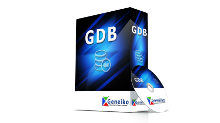
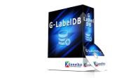
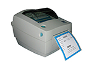
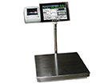
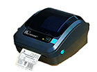
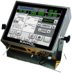

GDB - ζυγολόγιο
- Τοπική βάση των ζυγίσεων, περιέχει το είδος του προϊόντος, το βάρος, το απόβαρο, το μεικτό βάρος, την ημερομηνία ζύγισης και την ώρα ζύγισης
- Δυνατότητα ταξινόμησης ανά στήλης με το πάτημα ενός πλήκτρου
- Δυνατότητα ταξινόμησης με φίλτρα
- Δυνατότητα εκτύπωσης της βάσης δεδομένων σε τοπικό εκτυπωτή
- Δυνατότητα εκτύπωσης της βάσης δεδομένων σε δικτυακό εκτυπωτή
- Δυνατότητα αποστολής της βάσης δεδομένων μέσω ηλεκτρονικού ταχυδρομείου
- Δυνατότητα αποστολής της βάσης δεδομένων σε τοπικό διακομιστή
- Δυνατότητα αποθήκευσης σε USB stick
- Δυνατότητα αποστολής όλων των στοιχείων σε ERP
G-LabelDB
- Τοπική βάση δεδομένων, περιέχει το είδος του προϊόντος, το βάρος, το απόβαρο, το μεικτό βάρος, την ημερομηνία λήξης, την ημερομηνία παραγωγής, την ημερομηνία ζύγισης -συσκευασίας, την ώρα ζύγισης το barcode, το lot number, τον χειριστή, την τιμή, το counter και το νούμερο της μηχανής.
- Δυνατότητα ταξινόμησης ανά στήλης με το πάτημα ενός πλήκτρου
- Δυνατότητα ταξινόμησης με φίλτρα
- Δυνατότητα εκτύπωσης της βάσης δεδομένων σε τοπικό εκτυπωτή
- Δυνατότητα εκτύπωσης της βάσης δεδομένων σε δικτυακό εκτυπωτή
- Δυνατότητα αποστολής της βάσης δεδομένων μέσω ηλεκτρονικού ταχυδρομείου
- Δυνατότητα αποστολής της βάσης δεδομένων σε τοπικό διακομιστή
- Δυνατότητα αποθήκευσης σε USB stick
- Δυνατότητα αποστολής όλων των στοιχείων σε ERP
- Δυνατότητα εξαγωγής βάσης σε Csv, json, html, xml.
GLDB-net
- Δικτυακή βάση δεδομένων (απαιτείται σέρβερ), όλα τα μηχανήματα στέλνουν τις εγγραφές τους σε μία βάση στον σέρβερ. Περιέχει το είδος του προϊόντος, το βάρος, το απόβαρο, το μεικτό βάρος, την ημερομηνία λήξης, την ημερομηνία παραγωγής, την ημερομηνία ζύγισης -συσκευασίας, την ώρα ζύγισης το barcode, το lot number, τον χειριστή, την τιμή, το counter και το νούμερο της μηχανής.
- Δυνατότητα ταξινόμησης ανά στήλης με το πάτημα ενός πλήκτρου
- Δυνατότητα ταξινόμησης με φίλτρα
- Δυνατότητα εκτύπωσης της βάσης δεδομένων σε τοπικό εκτυπωτή
- Δυνατότητα εκτύπωσης της βάσης δεδομένων σε δικτυακό εκτυπωτή
- Δυνατότητα αποστολής της βάσης δεδομένων μέσω ηλεκτρονικού ταχυδρομείου
- Δυνατότητα αποστολής της βάσης δεδομένων σε τοπικό διακομιστή
- Δυνατότητα αποθήκευσης σε USB stick
- Δυνατότητα αποστολής όλων των στοιχείων σε ERP
- Δυνατότητα εξαγωγής βάσης σε Csv, json, html, xml.
GLDB-net statistics
- Δικτυακή βάση δεδομένων (απαιτείται σέρβερ), όλα τα μηχανήματα στέλνουν τις εγγραφές τους σε μία βάση στον σέρβερ. Περιέχει το είδος του προϊόντος, το βάρος, το απόβαρο, το μεικτό βάρος, την ημερομηνία λήξης, την ημερομηνία παραγωγής, την ημερομηνία ζύγισης -συσκευασίας, την ώρα ζύγισης το barcode, το lot number, τον χειριστή, την τιμή, το counter και το νούμερο της μηχανής.
- Στατιστικά από τους χειριστές, από τα προϊόντα. Αναλυτικά γραφήματα για βέλτιστη παραγωγικότητα.
- Δυνατότητα ταξινόμησης ανά στήλης με το πάτημα ενός πλήκτρου
- Δυνατότητα ταξινόμησης με φίλτρα
- Δυνατότητα εκτύπωσης της βάσης δεδομένων σε τοπικό εκτυπωτή
- Δυνατότητα εκτύπωσης της βάσης δεδομένων σε δικτυακό εκτυπωτή
- Δυνατότητα αποστολής της βάσης δεδομένων μέσω ηλεκτρονικού ταχυδρομείου
- Δυνατότητα αποστολής της βάσης δεδομένων σε τοπικό διακομιστή
- Δυνατότητα αποθήκευσης σε USB stick
- Δυνατότητα αποστολής όλων των στοιχείων σε ERP
- Δυνατότητα εξαγωγής βάσης σε Csv, json, html, xml.
G-Label Designer

- Επαγγελματική σχεδίαση ετικετών σύμφωνα με τις απαιτήσεις του πελάτη απευθείας από τον υπολογιστή στην ετικετέζα
- Εύκολη χρήση κειμένων, λογοτύπων και γραμμικών κωδικών (QR barcodes)
-
Εκτύπωση χαρακτήρων Unicode και άλλων γραμματοσειρών
GRC (remote controlling)
- Χειρισμός ετικετέζας από μακριά
-
Πλήρης πρόσβαση και έλεγχος
GPV (visualization and optimization of product lines)
- Συγκρίσεις ίδιου προϊόντος βάση χρήστη και ωραρίου
- Συγκρίσεις ίδιου χρήστη με διαφορετικό προϊόν και ωραρίου
- Προτάσεις για βελτίωση παραγωγής
- Απαιτείται δικτυακή βάση δεδομένων (απαιτείται σέρβερ), όλα τα μηχανήματα στέλνουν τις εγγραφές τους σε μία βάση στον σέρβερ
GRW (remote view all scales)
-
Επίβλεψη απομακρυσμένα, όλων των μηχανημάτων και απευθείας παρακολούθηση όλων των ζυγίσεων σε μια οθόνη υπολογιστή
G-trace (tracking and traceability)

- Συνοδεύεται από τα G-LABEL, G-LABELDB, GLDB-NET, από την είσοδο των άυλων στην παραγωγική διαδικασία έως και την έξοδο των τελικών προϊόντων προς διάθεση στους πελάτες κάθε εγγραφή εκτυπώνετε και παρακολουθείτε από ένα barcode EAN128 με τον κωδικό ζώου αν πρόκειται για κρέας/γαλακτοκομικά ή φάρμας αν πρόκειται για αγροτικά/φρούτα
- Kωδικοποίηση προϊόντων, κιβωτίων, παλετών και συσχετισμός των μεταξύ τους κωδικών
- Track & Trace
- Διαχείριση παραλαβών
- Διαχείριση φορτώσεων
- Προγραμματισμός παραγωγής
- Διαχείριση ποιοτικών ελέγχων
- Διαχείριση γνώσης
- Διαχείριση έκτακτων συμβάντων
Mass Management (ultimate software for factories)
- Συνοδεύεται από τα G-LABEL, G-LABELDB, GLDB-NET, G-trace, Διαχείριση μάζας σημαίνει ότι έχουμε όλα τα παραπάνω με πολλούς σταθμούς οι οποίοι είναι σε δίκτυο και όλες τις βάσεις τους κάτω από ένα software user friendly το οποίο τους δείχνει που είναι τι είναι και σε τι προμηθευτή ή πελάτη αντιστοιχεί
- Kωδικοποίηση προϊόντων, κιβωτίων, παλετών και συσχετισμός των μεταξύ τους κωδικών
- Track & Trace
- Διαχείριση παραλαβών
- Διαχείριση φορτώσεων
- Προγραμματισμός παραγωγής
- Διαχείριση ποιοτικών ελέγχων
- Διαχείριση γνώσης
- Διαχείριση έκτακτων συμβάντων
Label printer Geneico
Label printer Geneico is suitable as a stand alone printer, total printer or for weight-related product labeling. The Label printer Geneico in combination with the Bonaros weighing technology is the perfect starter kit for manual price labeling. Geneico is suitable for label rolls with a diameter of up to 300 millimeters. Thus retrofitting time is reduced - especially with large labels. The printers are network compatible and can also be controlled directly via the Internet. Settings and maintenance of the printer unit can be made without need of any tools - reducing costs and increasing print quality. The new PC-based hardware provides more memory space and fast label data processing.



